5. Git and GitHub#
Overview#
Introduction to Git and GitHub
Cliff Notes
Installing Git
Quick Overview of Most Common Commands
Create a Git Repository
Your First Commit
Git Commands
Special Files
Create and Upload to GitHub Repository
Cloning and Downloading from a Repository
Updating a Cloned Git Repository
JupyterLab Git Extension
1. Introduction to Git and GitHub#
This is optional and not all students will use Git. This Material is also under development.
Git is a version control system that operates on your computer and allows you to track changes in your files over time, allowing you to save different versions of your work, revert to previous states, and collaborate with others. You install Git in your project folder by initializing it, which makes a special hidden .git directory. A directory with git installed is called a repository or repo. For science majors new to coding, Git provides a safety net as you experiment with your projects, allowing you to try new ideas without fear of losing your original work. It’s an essential tool for managing the evolution of your research and coding projects, even if you’re just starting out.
GitHub, on the other hand, is a web-based platform that builds upon Git’s functionality by providing a centralized location to store and share your Git repositories online. GitHub offers a way to build a portfolio of your work, learn from others’ code, and potentially collaborate on research projects with students and scientists around the world. It’s a valuable resource for learning coding practices and engaging with the scientific community, even if you’re just beginning your coding journey.
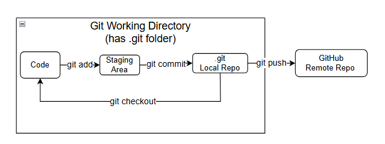
2. Cliff Notes#
These are quick core instructions for these activities without going into the nuances. If you are doing this the first time you should go through each activity to understand what you are doing. This is more for quick reference after you have done this once or twice, and need to refresh yourself.
Install Git (only do this once)
sudo apt install git -y
Initialize Repo (this recursively converts the current working directory to a git repo, and need not be repeated. It need not be done if you clone a repo). Do not create a repo within a repo (make a subdirectory of a git directory a repo)
git init
Local commit
git status(optional)git add .( the’ .’ means everything in the current directory and all subdirectories)git status(optional)git commit -m"manditory message"
Push to github (this only works after you have set things up
git push -u origin main(first time)git push(subsequent times if you already set upstream to main)
Clone Repo (make sure you are in the correct local git directory you want to clone to.
git cone https://github.com.the_repo_you_want
Updating Cloned Repo (if needed, see instructions below to make sure it is correctly set up)
git pull
3. Installing Git#
In order to run git commands you first need to install git. Git is not part of the Conda system and although you can do this from within a Conda environment, we will first shut conda down.
Type:
which gitThis tells you where git is, and if it is installed. If it is installed you do not need to install it again.Type:
git --versionThis tells you the version of the installed git. (if it is installed)conda deactivatefrom the base environment. You should see the (base) in front of the command prompt disappear. When using sudo apt commands you should deactivate conda so there is no (env) in front of the command promptType:
sudo apt updateThis provides a list of updated systems level packages (not python)Type:
sudo apt upgradeThis installs the updated packages from the listType:
sudo apt install git -yinstalls git, the -y confirms the installation prompts.Type:
git --versionto confirm it is installed
4. Quick Overview of Most Common Actions#
(these are after you have created remote on GitHub)
Create Repo and Connect to Remote#
git init- done only once, this converts a local directory to a git repository`git remote add origin
- done once only, connects your local repo to a remote
Making a local commit and pushing to GitHub#
git add .- places anything you have changed in working directory to the staging areagit status- lets you check what you are doing before you commit it.git commit -m"your required message"- commits material in staging to repogit push -u origin main- pushes commits from local repository to GitHub repo that is linked to it.
5. Create a Git Repository (Local Repo)#
There are several strategies, and we are going to take make one of our project folders a repo. In so doing, any subfolder will also be part of the repo. So if you create 4 projects, you will create 4 repos. Note: if you clone my folder it will already be a git repo. The reason we are doing this is so you can commit one project without affecting the others, and upload that project to github without affecting the others. If we look at the projects folder below we see there is one subfolder, called py4sci, and that is my project folder for this class
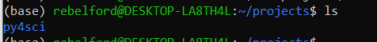
First, we check that our working directory is not part of a git repo or within the tree of one:
Type: git rev-parse --is-inside-work-tree It will return True if you are, and give a fatal message if you are not.
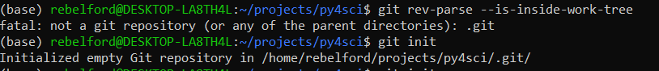
Now that we now we are not within a repo tree, we can make the py4sci directory a git repo.
Type: git init this initializes the rep. And we now check by retyping the last command (use the up arrow on the terminal), and you see it returned true. Note, since we knew this was not in the tree of a repo we could have just looked at the hidden folders with ls -a, where the -a means all, and shows hidden folders. The .git folder is where the versions of git for this repo are held.
Type: ls -a
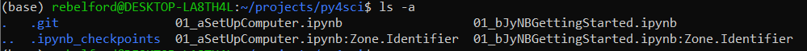
Note, if you look at the image below you will see some files in the repo with a *:Zone.Identifier ending. These were created by Windows, and we do not want to track them with git. So we will create a .gitignore file. Instead of creating one from scratch, we will use a template from a web API and then direct it to the .gitignore file with the following:
Type: curl https://www.toptal.com/developers/gitignore/api/python > .gitignore
now look at the folder and its hidden files
Type: ls -a and open the .gitignore file with the nano editor.
Type nano .gitignore Note,this is a text editor and the mouse does not work. You need to use the arrows to navigate. ctrl-o will save output to the file it shows (type y) and ctrl-x exits the nano editor. the instructions are at the bottom. With the nano editor I added the following lines, and added Thumbs.db, which windows autogenerates to cache thumbnails.
## Windows Specific Files
*:Zone.identifier
Thumbs.db
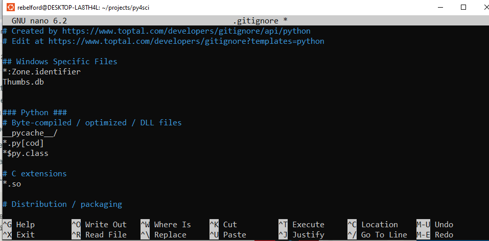
6. Your First Commit#
There is essentially a 3 stage process to a git commit,
git status- see the status of untracked filesgit add filename- this places the file in the staging area, see below for flags (. , -A)git status- this tells you what is stagedgit commit -m'your concise messsage#the message is required
Note: you may get a message saying: “Author identidy unknown”. I which case you need to type:
git config user.email "YOU@example.com"git config user.name"YOUR NAME"
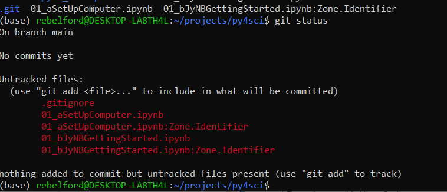
Stage the files (identify the ones you want to commit). You have two options
git add .Stage all changesgit add filename1 filename2Stage specific files
*Note in the image below I used git add . which would normally be fine because I have a .gitignore file that contains :ZoneIdentifier, telling git to ignore those files. But I had added those files before creating the .gitignore file and so all the files turned green after running the status. I should have run git add 01_aSetUpComputer.ipynb 01_bJyNBGettingStarted.ipynb this one time. The ZoneIdenifier are files Windows created and are not part of my code and so should not be added to the staging area. I fixed this in step 6, and we will discuss .gitignore files later.
Type:
git status. Note the files in red of turned green, and these will be committed.
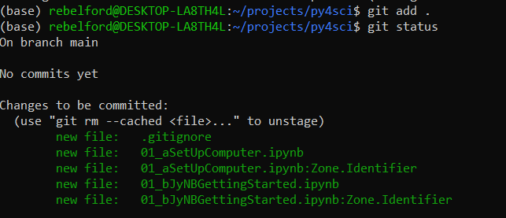
The actual commit. Now you must write a message for the commit, and there are two options
Option 1: Type
git commit -m "Your concise commit message here"Option 2: Type
git commitThis will open your default text editor and you can write a longer message
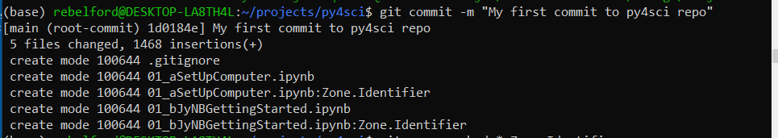
gitignore issue: If you look at the output above you will see that the two *:Zone.Identifier files were committed to the git repo. I should have staged and committed the .gitignore file before adding other files to the repo, or used the second option in step 2 and specified the files I wanted committed. To fix this I had to do the following two line of code:
git rm --cached *:Zone.Identifier
git commit -m "Remove Zone.Identifier files from tracking"
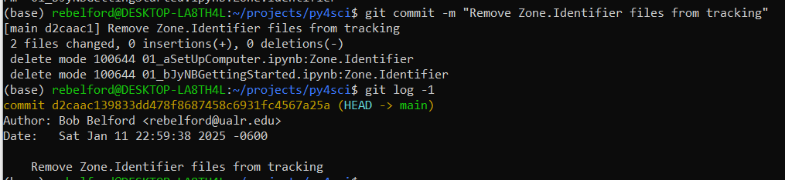
7. Git Commands#
Table 1: Initializing and Setting Up a Repository#
Command |
Description |
Common Flags/Switches |
|---|---|---|
|
Initializes a new Git repository in the current directory. |
None |
|
Creates a local copy of a remote repository. |
|
|
Adds a new remote repository with a specified name (e.g., |
None |
|
Configures user information (e.g., name, email) or repository settings. |
|
Table 2: Staging and Committing Changes#
Command |
Description |
Common Flags/Switches |
|---|---|---|
|
Stages changes for a specific file. |
|
|
Shows the status of the working directory and staging area. |
|
|
Records staged changes to the repository. |
|
|
Displays the commit history. |
|
Table 3: Working with Branches#
Command |
Description |
Common Flags/Switches |
|---|---|---|
|
Lists branches or creates a new branch. |
|
|
Switches to an existing branch. |
|
|
An alternative to |
|
|
Merges the specified branch into the current branch. |
None |
|
Moves the current branch to the tip of the specified branch, replaying commits. |
|
Table 4: Dealing with Remotes (Push, Pull, Fetch)#
Command |
Description |
Common Flags/Switches |
|---|---|---|
|
Uploads local changes to a remote repository. |
|
|
Downloads objects and refs from a remote repository without merging. |
None |
|
Combines |
|
|
Manages remote repositories (e.g., list, add, remove). |
None |
Table 5: Resolving Merge Conflicts#
Command |
Description |
Common Flags/Switches |
|---|---|---|
|
Attempts to merge the specified branch into the current branch. |
None |
|
Displays files with conflicts after a failed merge. |
None |
|
Shows differences between the working directory and staging area, or between commits. |
None |
|
Marks a conflict as resolved for a specific file. |
None |
|
Aborts the current merge and returns to the pre-merge state. |
None |
|
Opens a graphical or CLI tool to resolve merge conflicts interactively. |
None |
Table 6: Undoing Changes and Reverting#
Command |
Description |
Common Flags/Switches |
|---|---|---|
|
Discards changes in the working directory. |
|
|
Moves the HEAD and optionally resets the staging area or working directory. |
|
|
Creates a new commit that undoes the changes in the specified commit. |
None |
|
Removes untracked files and directories. |
|
‘git add` - there are a variety of git add commands
‘git add .` - Recursively adds all files in current directory to staging area
git add -A- Recursively adds all files from git root to staging area
git log- provides a hash string to identify the commit, the author and date of the commit and the git commit message. You would use the hash string to revert back.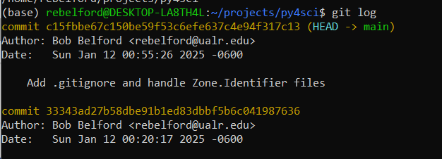
git diff filename- gives the difference between the current file in the staging area and the last version committedgit checkout
git checkout -- filenameReverts a saved file in the staging area to the last commitgit checkout commit-hash- Reverts a saved file in the staging area to a commit identified by its hash in the log filegit checkout branch-name- Switches working directory to specified branchgit checkout -b new-branch-name- creates new branch and switches to itgit checkout .discards all unstaged changes in working directory
git rm --cached -r- stops tracking all files, be very careful when you use it
8. Special Files#
8.1 readme.md#
This is a markdown document that will function as the landing page for your github repository and display below your files.
8.2 .gitignore#
The .gitignore file is a list of files you do not want to add to the staging area. These are files that have nothing to do with your code. You add each file or file type to a new line. Types of files you would not want to track are:
Operating System Generated files like the ZoneIdentifier files.
Passwords, API and SSH keys
Data files
Utility Files
Executable programs .gitignore rules:
# indicate comments
* indicate wild cards
.gitignore templates#
github/gitignore is a Github has a repository of .gitignore templates for many programming languages. you can create a .gitignore file from scratch and add files to it. The following command will fectch the code and generate a .gitignore file int he directory you run it from, but will overwrite any existing code.
curl https://raw.githubusercontent.com/github/gitignore/main/Python.gitignore > .gitignore Once we have the file we can edit it with nano. 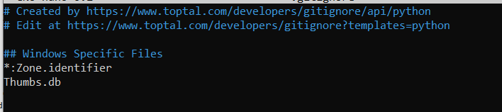
8.3 environment.yml File#
YAML file that specifies the environment dependencies for a conda environment Specifies:
Conda packages
Pip packages
Channels to search for packages
Sample code: name: my_project_env channels:
conda-forge
defaults dependencies:
python=3.10
numpy
pandas
pip
pip:
some-pip-only-package
Note: the first -pip installs pip, and the second -pip: uses pip to install the subsequent packages below it.
9. Create and Upload to a GitHub Repo#
1. Create an account on github.com#
2. click on repositories and click NEW#
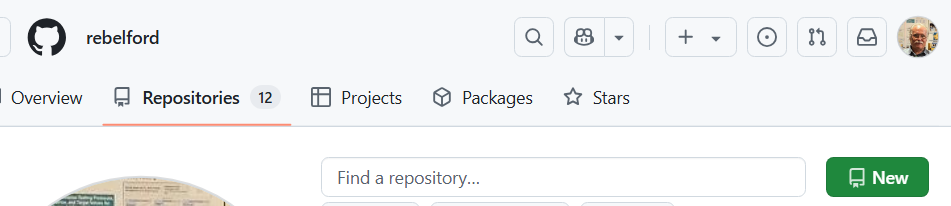
3. Provide a Name and Description#
Choose if it is Public or Private. As this is your first repo we will create an empty one and not add a .gitignore, readme or license. Instead we will create those on your local repo and push the to github. Scroll to the bottom and click “Create repository”, and you will now have a new online repo. Important, if you are new to coding you should not do any editing or create any files in the remote repo, as then you have to deal with conflicts between different versions.
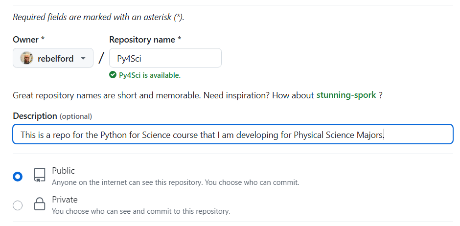
4. Copy SSH Link#
Copy the SSH link for your repository as you will need it to push your local repo to the online. (You can use the https link to clone a repository, but if you want to push to it you now need to use the SSH link and will need to set up a token)
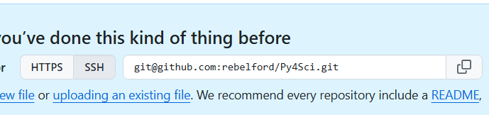
5. Add .gitignore and readme file#
On your local machine go to the git repository you wish to upload to github. add your .gitignore and readme files. (See section 8 above). Be sure to have the .gitignore file or you will upload material that should not be uploaded to the github. If you are creating a new repository you will need to initialize it.
6. Connect local repo to remote github repo#
Now we need to tell the local repo that we created a remote repo using the command
git remote add origin <The SSH link on your repo>
git remote -v
git push -u origin main
Lets look at these commands one at a time.
git remote add origin <The SSH link on your repo>tells github to connect the current local repository to the github one using the SSH link. You will need to set up a token for authentification.git remote -vShows you what remote (github) repo you can push to or pull fromgit push -u origin mainIn the future you will only need to rungit pushgit pushtells git to push to the origin which is the remote name you created above-uthis stands for upstream, and tells git to remember the default remote and branch so in the future you can just usegit pushoriginThis is the name you gave remote when you ran thegit remote addabovemainThis is the branch of the remote you are pushing to, which is the main branch.
Check GitHub#
Now you can go to GitHub and check that your files have been uploaded
NOTE: If you ever need to find the URL to a remote repo, open the repo, click code, and it will show in the dropdown box. You will want to use the https option if you are cloning someone else’s repo, and the SSH option if you are setting up your own repo that you want to push to. 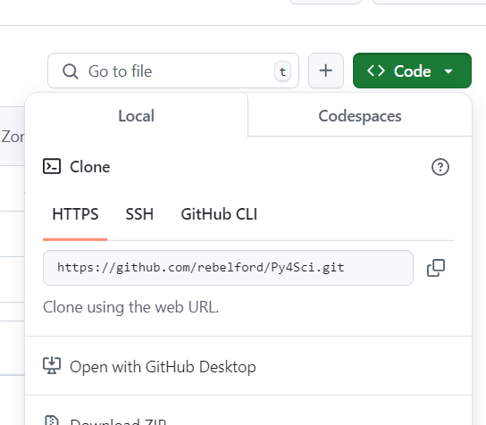
Git Authentification Issues#
Any webservice that allows you to upload material like git will always be dealing with authentification. I am now finding it neccessary to use SSH. If you set up a repo and it asks for password, but fails, go and set up an SSH key.
Type
git remote -vif it gives https addresses like below, you need to change them to .git addresses so you can SSH
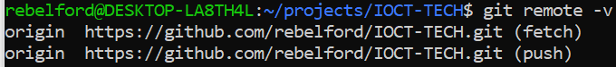
Type
git remote set-url origin git@github.com:YOURUSERNAME/REPONAMEnote, you can copy these from the clone option, just click on SSH instead of HTTPS
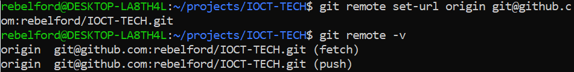
10. Cloning and Downloading From a Repo#
You sort of have three options to obtain material from a GitHub repo. You do not need to run Git on your computer to download a file or the zip, but you will need to run git to clone a repo.
Download individual files
click on file and click download button 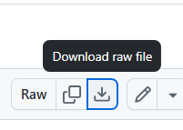
Download Zip of Repo
click on Repo. then Code, and Download Zip 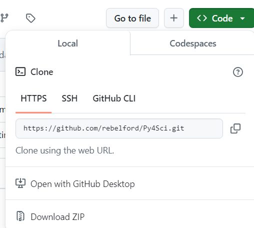
Clone Repo
copy the https link for your repository
In the folder you wish to post your repository, which does not need to be a git folder, you should type the following command, and that will create a git folder with the content of the cloned folder
git clone https://github.com/rebelford/Py4Sci.git
11. Updating a Cloned Git Repo#
To pull updates from the original GitHub repository into your local repository, follow these steps:
1. Ensure You Are in the Correct Directory#
Navigate to the cloned repository on your computer:
cd /path/to/your/repository
Replace /path/to/your/repository with the actual path to your cloned repository.
2. Check the Remote Repository#
Verify the remote repository is correctly set up. Run:
git remote -v
This should display something like:
origin https://github.com/username/repository.git (fetch)
origin https://github.com/username/repository.git (push)
If the remote is not set or incorrect, set it using:
git remote add origin https://github.com/username/repository.git
3. Pull Updates in One Step#
Alternatively, you can combine fetch and merge using:
git pull origin main
after you have done this once, you can just type
git pull
This directly fetches and merges changes from the remote main branch.
—.
5. Steps to Overwrite Local Changes with Remote Files#
Fetch Changes from the Remote: First, fetch the latest changes from the remote repository without merging them:
git fetch origin
Reset Your Local Branch to Match the Remote: Reset your local branch to match the remote branch (e.g.,
main). This will overwrite all tracked files in your local repository with the versions from the remote:git reset --hard origin/main
This step discards any uncommitted changes in tracked files.
Untracked files (files not added to Git) will remain untouched.
Remove Untracked Files (Optional): If you want to clean up untracked files and directories, use:
git clean -fd
Use this only if you’re sure you want to delete untracked files and directories.
Pull the Latest Changes: After resetting, you can pull any additional updates from the remote (though this is often unnecessary immediately after a reset):
git pull
6. Instead of step 3 you can Merge the Updates into Your Local Branch#
Assuming you are on the default main branch:
git merge origin/main
This merges the changes from the remote main branch into your local branch. If your repository uses a different default branch, replace main with the appropriate branch name (e.g., master).
7. Handle Merge Conflicts (if any)#
If there are conflicts, Git will notify you. Resolve conflicts manually by editing the affected files. After resolving:
Mark the conflicts as resolved:
git add <file>
Complete the merge:
git commit
Tips#
Always check the status of your local repository before pulling updates:
git statusIf you have local changes, stash them before pulling to avoid conflicts:
git stash git pull origin main git stash pop
git stash: Temporarily saves your current changes so your working directory is clean.git pull origin main: Fetches and integrates the latest changes from the remotemainbranch into your local branch.git stash pop: Retrieves and reapplies your stashed changes on top of the updated codebase.
12. JupyterLab Git Extension (optional)#
Do not be running a notebook or lab while installing the extension
Turn off Jupyter Lab
Make sure you are in the base environment
Install the Jupyter Lab Extension
`conda install -c conda-forge jupyterlab-git
Rebuild Jupyter Lab (if required)
jupyter lab build
Acknowledgements#
This content was developed with assistance from Perplexity AI and Chat GPT. Multiple queries were made during the Fall 2024 and the Spring 2025.